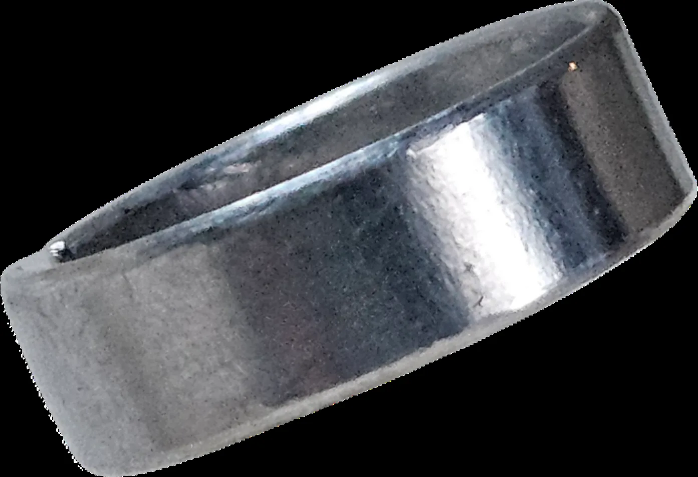
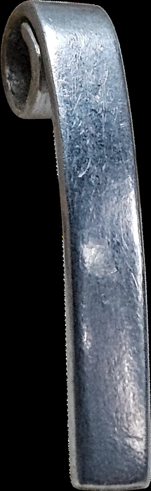
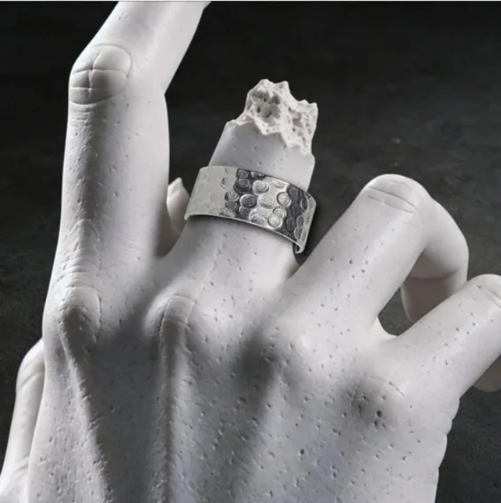

Krümmung
Auf gebogenen Formen bricht Licht schneller. Dadurch wirkt dieselbe Struktur kontrastreicher und verändert sich schon bei kleinen Bewegungen.
03 — Formen
Dieselbe Struktur verhält sich auf jeder Geometrie anders. Krümmung, Fläche, Kante und Licht verändern die Wirkung — ohne die Oberflächenidee zu verlieren.
Oberfläche × Geometrie
Auf einem Ring läuft eine Textur um die Krümmung. Auf einem Anhänger kann sie als Fläche wirken. Genau dieser Wechsel macht dieselbe Oberflächenfamilie immer wieder anders.



Auf gebogenen Formen bricht Licht schneller. Dadurch wirkt dieselbe Struktur kontrastreicher und verändert sich schon bei kleinen Bewegungen.
Größere, ruhigere Flächen zeigen mehr vom Aufbau einer Textur und machen Übergänge, Verdichtung und Werkzeugspuren besser sichtbar.
Die Form setzt Grenzen. Wo Oberfläche auf Kante trifft, entsteht ein zusätzlicher Kontrast zwischen Struktur und Geometrie.